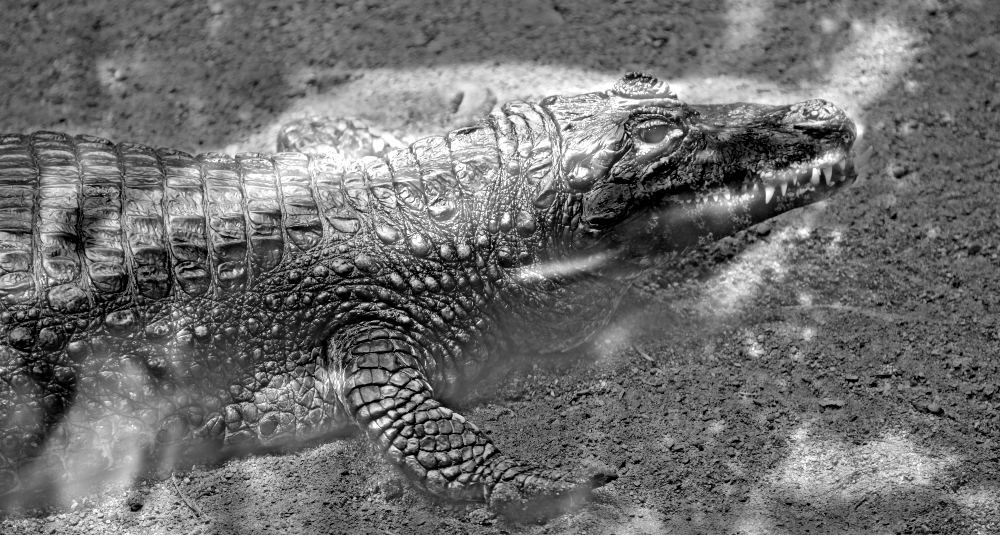
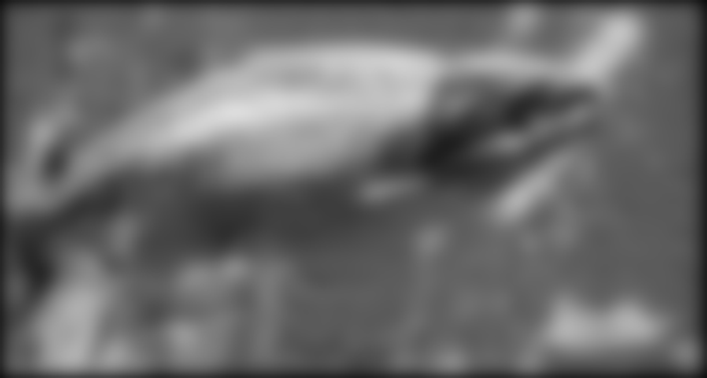
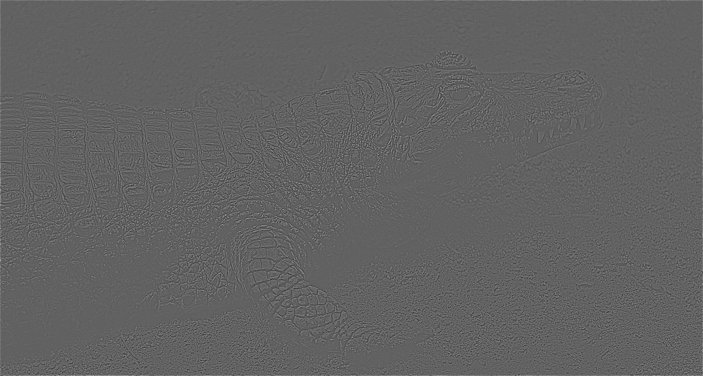
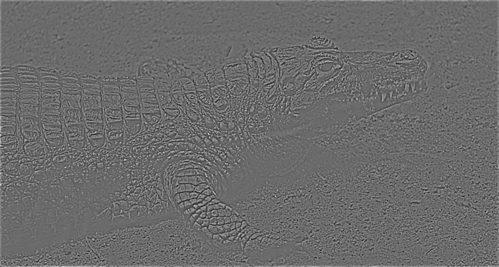
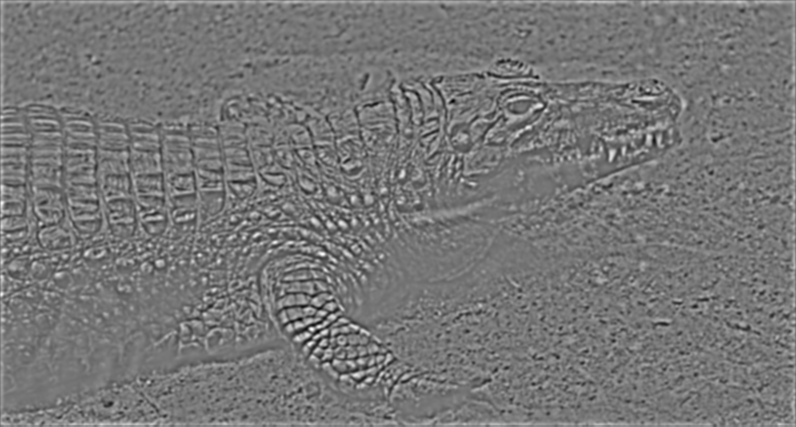
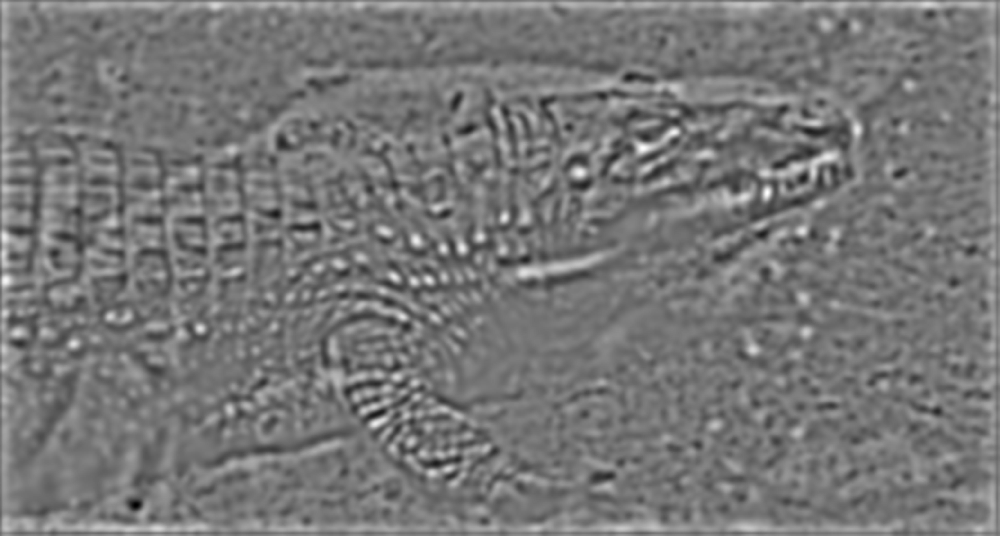
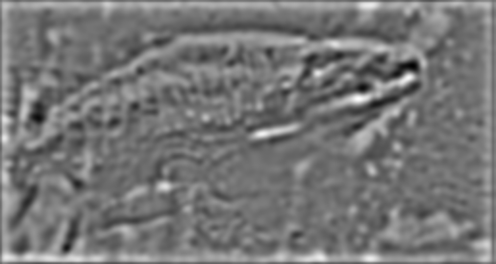

This is my favorite result, which is a combination of a furious fish and a crocodile. The fish picture is taken at Shedd Aquarium, Chicago. And the crocodile one is taken at the bio-dome at Montreal Olympic park.
The high frequency components of the background image is filtered by a gaussian filter with size 100 and sigma 15, while the low frequency component of the foreground image is filtered out by subtracting a gaussian filtered version from itself, with size 100 and sigma 200. These values are obtained by trial and error. This one worked well also because the shape and of the main objects (fish and crocodile) are similar at this scale and angle. The contrast of the background image is moderate, therefore the shape of the fish does not intervene with the faint details of the crocodile too much.
Laplacian pyramid of the hybrid:
     FFT of the hybrid image and two component images:
Combination of a chick and a scanning tunneling microscope picture of an insect, both taken at the Museum of Science and Industry, Chicago.
Two component images pre-processing:
Alma Mater from Wikipedia and Jesus Christ, which is taken at the Notre Dame Basilica, Montreal, CA.
This combination did not yield good results. I believe the reasons it did not work so well are that first the object in the low-passed image has very high contrast compare to its surroundings, which highlighted its shape too much, and it is not exactly the shape of the object in the high-passed image. Secondly, the high-passed image was not properly treated such that the details are not very visible.
Contrast improvement on a Alma Mater picture, using histogram equalization algorithm, with 70-30 ratio between equalized and original histogram:
Saturation adjustment in the HSV space, with saturation raised to power 0.7.
Color shifting in Lab space, red shift is achieved by multiplying channel a by a factor of over one; yellow shift is achieved by multiplying channel a by a component less than one and multiplying channel b by a component over one.